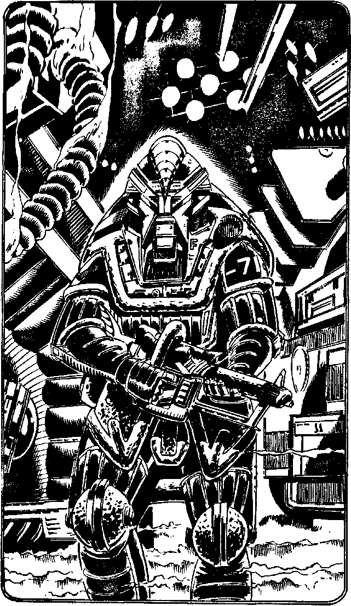

27
A lancing white bolt of superheated plasma misses your target and smashes a hole in the end wall of the corridor. One of the guards fires his laser rifle as the other runs towards you. He wings you in the side - lose 4 Endurance points. Then, two security droids arrive and your assailants run back down the corridor, darting out of sight. You give your Security Clearance Code and identify yourself. Satisfied, the security droids chase the two would-be assassins and you return to the safety of Falcon's Wing. Turn to 336.
Turn to 336